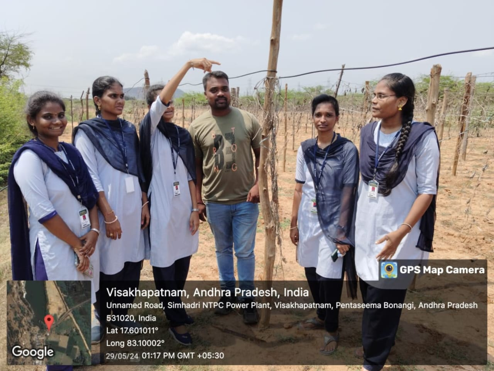

Conclusion
Air pollution is one of the most pressing environmental challenges we face today. It has far-reaching consequences for human health, agriculture, and the global ecosystem. Immediate action is required to mitigate its impact.
- Raise Awareness: Communities must be educated on the dangers of air pollution and encouraged to take personal and collective actions to reduce emissions.
- Sustainable Development: Governments and industries should focus on cleaner technologies and sustainable practices to minimize environmental damage.
- Stricter Regulations: Effective enforcement of environmental regulations is crucial to ensure that industries and transportation systems comply with emission standards.

"Together, we can create a healthier, cleaner environment"